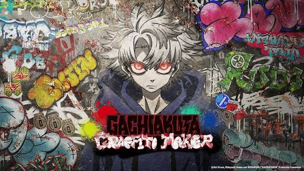
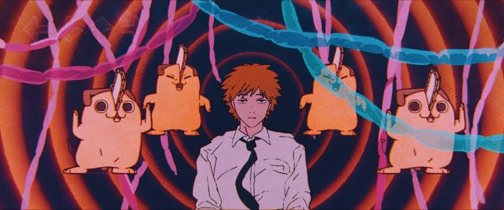
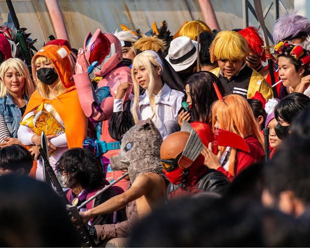

Anime offers a stunning variety of visual styles that live-action simply can't match, constantly pushing the boundaries of what is visually possible on screen. From breathtaking, hyper-realistic backgrounds that capture the delicate play of natural light to wildly expressive character designs that exaggerate motion for comedic or dramatic effect, the medium uses animation to its absolute fullest potential. This boundless artistic freedom allows creators to build vibrant, impossible worlds, choreograph physics-defying action sequences, and convey subtle character emotions in ways that feel entirely unique, deeply immersive, and visually captivating.
Unlike many Western cartoons that have historically been pigeonholed into targeting younger audiences, anime spans an incredible, practically limitless range of genres tailored for every single demographic and interest imaginable. Whether you are searching for an intense, mind-bending psychological thriller, a heartwarming slice-of-life romance, a high-stakes sports drama, or an epic science-fiction adventure across galaxies, there is a beautifully crafted story waiting for you. It frequently and fearlessly tackles complex, mature themes like existential philosophy, moral ambiguity, and the search for personal identity with a level of nuance and depth that easily rivals any classic novel or prestige live-action television drama.

The meticulous sound design and unforgettable music in anime elevate the storytelling to a completely different, visceral level. Japanese voice actors, known as seiyuu, undergo rigorous training and are celebrated as superstars for their intense passion and their unparalleled ability to bring characters to life with raw, unfiltered, and deeply convincing emotion. When you combine those powerhouse vocal performances with iconic, high-energy opening theme songs, intense battle tracks, and sweeping orchestral scores, the audio perfectly captures the exhilarating hype of a climactic showdown or the devastating sorrow of a heartbreaking tragedy, making the viewer feel every single beat of the story.

Finally, diving into anime means joining a massive, wildly creative, and welcoming global community that transcends language barriers. The medium provides a fascinating and unique window into Japanese culture, daily traditions, and distinct humor, while simultaneously connecting millions of fans across the world. People bond over the shared excitement of weekly simulcast episode drops, the creation of incredible fan art, deep analytical lore discussions, and highly detailed cosplay at conventions. This shared, vibrant enthusiasm elevates the viewing experience, making watching anime feel like participating in a collaborative, worldwide cultural event rather than just passively staring at a screen in isolation.